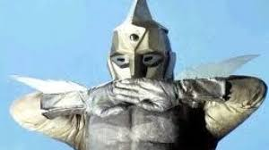
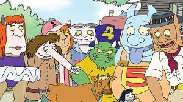

DESENHOS ANTIGOS.
caverna do dragão, é um dos desenhos mais antigos já visto na televisão

basicamente, o desenho trata-se de um grupo de amigos que queria voltar para casa, mas sempre que
tentavam voltar, acontecia coisas sobrenaturais que os impediam de voltar.

Pica pau é a ave mais travessa e engraçada da televisão brasileira
Spectreman era considerado o Power Ranger da época
uma família de monstrinhos nada monstruosa